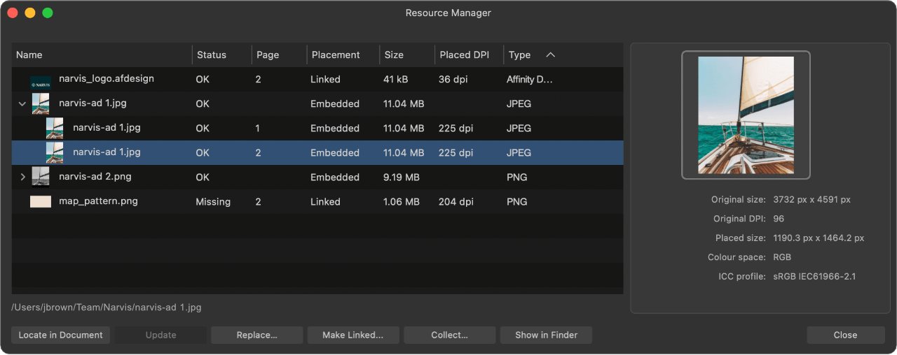

The Resource Manager lists all of the image and document resources used in your document.

From the Resource Manager, you can view the status of all resources, the page that each resource can be found on, the placement of the resource (linked, embedded or remote), the file size, placed DPI, and file type. If the same resource is used multiple times within the document, they will be grouped together in the list.
Right-clicking on any of the column headers allows you check or uncheck columns to display or hide them.
The key difference between linked files and embedded files is the location of the stored data and if data is updated after being linked or embedded.
Embedded files are stored in the document and can't be subsequently updated if the source file changes, i.e. there is no link to the source file.
Linked files are not stored in the document and can therefore be updated (via Resource Manager) in the document from the source file if the source file changes.
Images dragged and dropped from a web browser have a placement value of Embedded by default, regardless of a document's image placement policy, or Remote if the is held before dropping onto your document.
A placed image or document can have the following Status:
Additionally, you can use the Resource Manager's Collect feature to gather a document's resources, which may be distributed between multiple folders, into a single folder for ease of management, e.g. archiving a project when it is complete. If you wish to share a project, Affinity's Save as Package feature is a better option.
The following options are available from the Resource Manager: